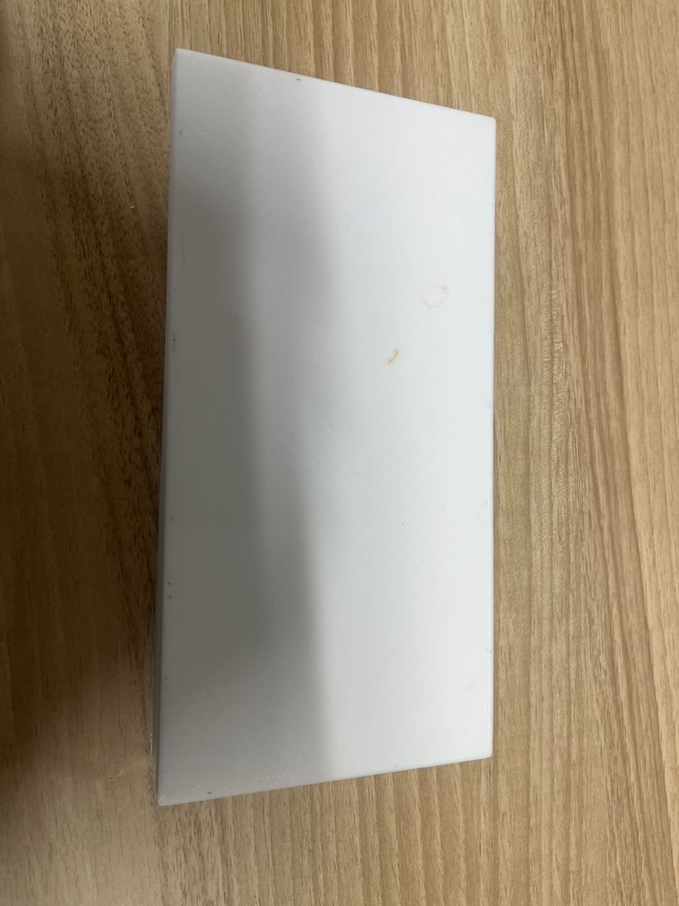

今回班の人たちと電車の中でピクニックをしている人がいたのでその人について
話し合った結果、持ち運び可能な机を作ることになった。
設計図

これが今回の作品の設計図だ。
※折り紙でだいたいの形を作ったが、写真を取り忘れたためない。
完成品

今回の作品には3Dプリンターを使った。 机の面積は縦20cm横10cmの200平方センチメートルとなっている。
この面積のモノを二つ合わせて縦20cm横20cmの400平方センチメートルの机が出来る。 だいたいお弁当箱1つおけるサイズだ。
説明
- 持ち運びできる机があることで電車内で場所を広げてピクニックのように食べるよりも
- 地面に食べ物を置きたくない人にも利用できる。
スペースを減らすことができる。（マナー悪いけど）
使用機材
りくと
残りの班のメンバー
てら
AYU
himeri